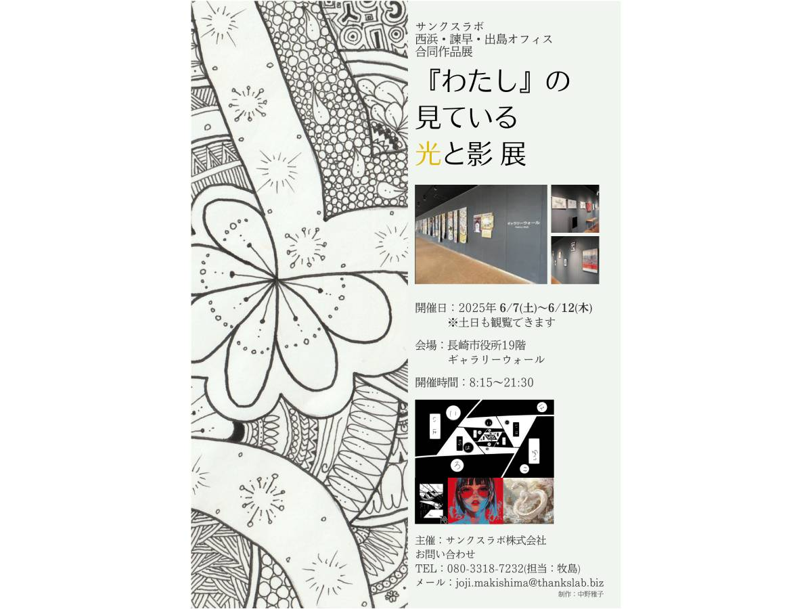

私の所属する、就労移行支援A型事業所サンクスラボでの業務の一環で制作しました。見る方の「障がい者アート」という先入観を打ち破れるよう「障がいのあるなしに関係なく誰もが持つ二面性＝光と影」を展覧会タイトルとポスターに表現しつつ、視認性などのアクセシビリティにも配慮しました。
担当
展覧会タイトルのネーミング・展覧会のポスターデザイン
ポスター制作の目的
展覧会開催の認知と集客数の獲得
ターゲット
障がい者アートや障がい者福祉にに関心の高い方
展覧会タイトル「『わたし』の見ている光と影展」のネーミングについて
精神疾患当事者として、「障がい者アート」という言葉に根強くある先入観を打ち破りたいという思いから、このタイトルを考えました。
障がいの有無にかかわらず、人も社会もそれぞれが持つ「特性」がある──そう考えたとき、そこには常に「二面性」があることに気づきました。
「光と影」という言葉には、その二面性を込めています。
そして、それを“わたし”には見えている——と表現することで、「障がい者アート」そのものへの問いかけ、さらに「健常者」と「障がい者」という二分法への問題提起を込めました。
デザインについて
ポスター自体をメッセージ性のある「ひとつのアート」と位置付け、左に大きく作品を配置しました。
フォントにUDフォントを用いる、薄いグレー背景にフォントカラーを濃いグレーにするなど、アート性だけでなくアクセシビリティも重視しました。